In this project, we develop a real-time neuromorphic vision framework for edge AI deployment on Raspberry Pi 5 using event-based cameras (Prophesee GenX series). The system is designed for low-latency, power-efficient perception in unconstrained environments, enabling continuous human-centric scene understanding directly on embedded hardware.
The pipeline combines event-driven sensing with lightweight deep learning models for detection and tracking, integrated with motion-aware analysis for activity understanding. A CMOS RGB stream is optionally fused for auxiliary pose estimation, enabling hybrid event–frame perception without increasing system latency significantly.
The framework is optimized for deployment on Raspberry Pi 5 using ONNX-320 lightweight inference paths and demonstrates robust performance for real-time tracking, motion analysis, and activity recognition in dynamic indoor environments.
The system highlights the potential of neuromorphic sensing for privacy-preserving, low-power, and adaptive intelligent perception systems suitable for robotics, smart surveillance, and human–machine interaction.
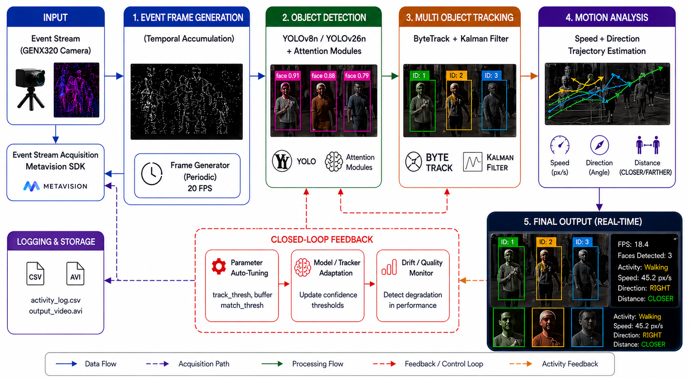
The proposed framework utilizes dual Prophesee GenX320p event camera sensors with 76 and 104 degree field of veiw for ultra-low latency visual perception. Unlike traditional RGB cameras, event sensors asynchronously respond to brightness changes, enabling efficient motion-centric processing with reduced power consumption and improved temporal precision.
The data was acquired with default bias settings as well as optimized bias setup to evaluate the impact of sensor bias tuning on event stream quality, motion sensitivity, background noise suppression, and downstream perception performance for real-time neuromorphic vision tasks.
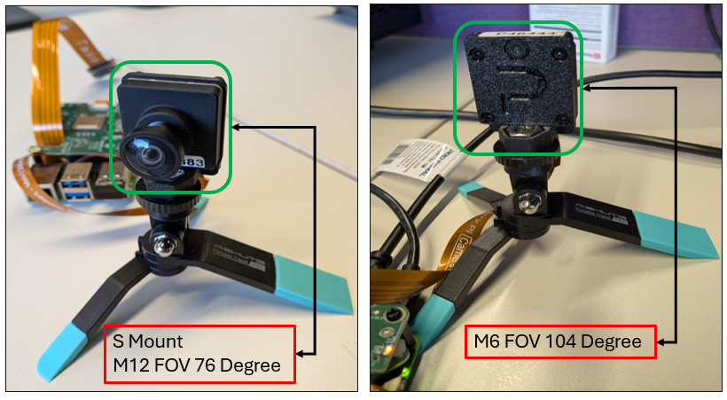


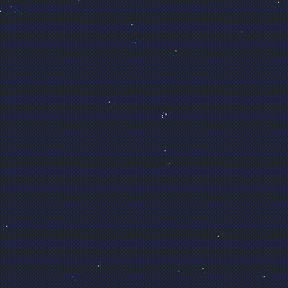
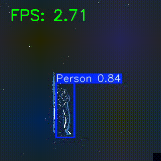
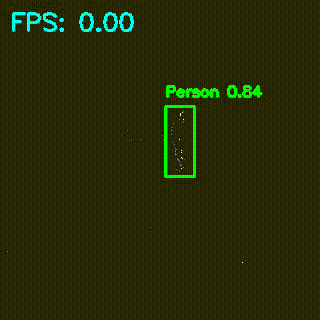
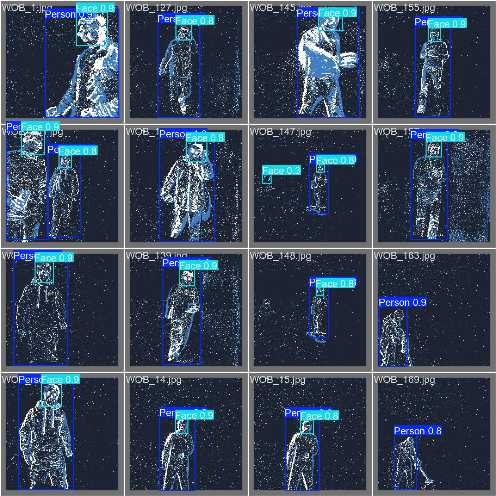
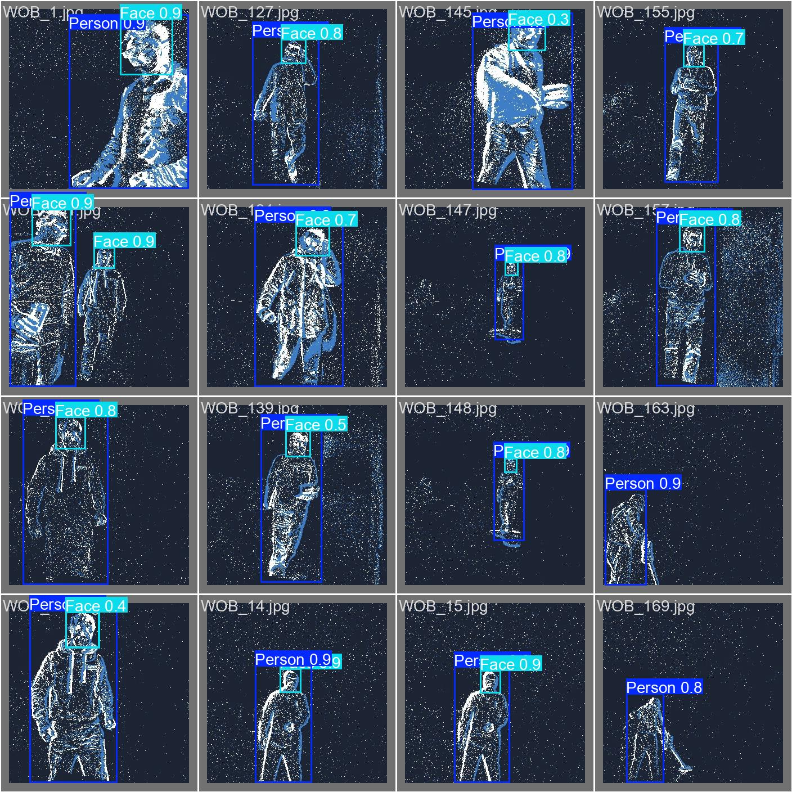


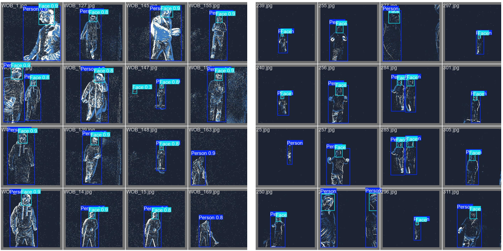
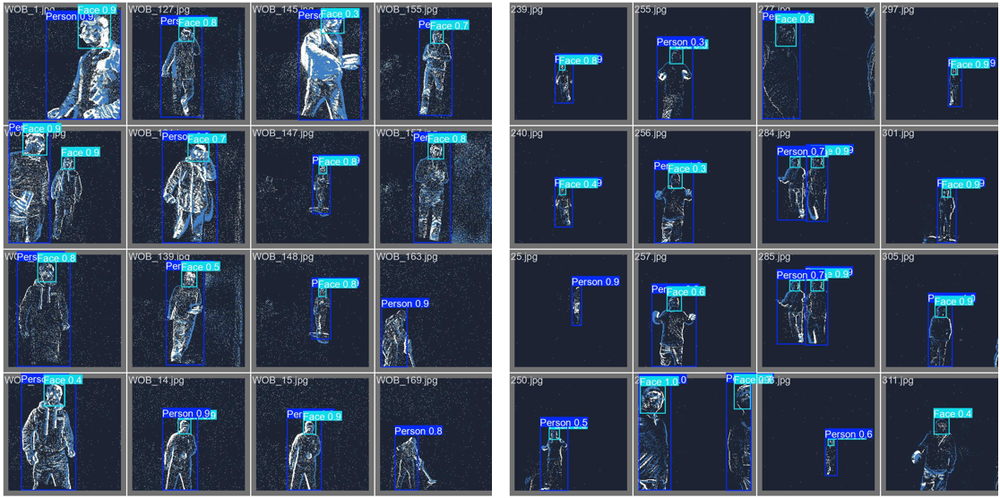
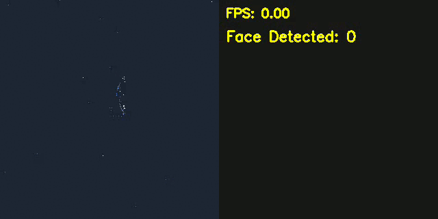
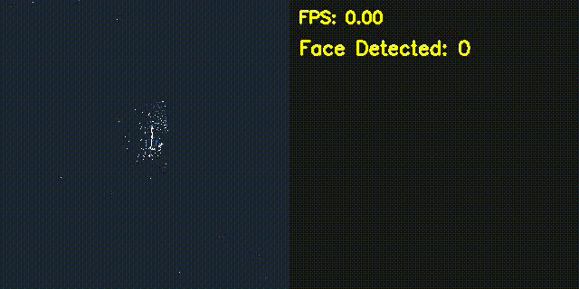
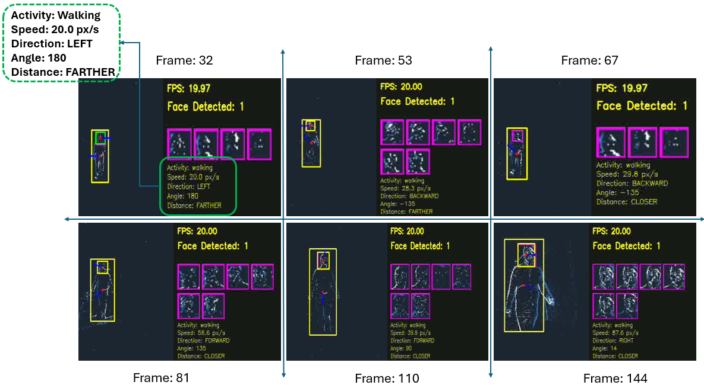
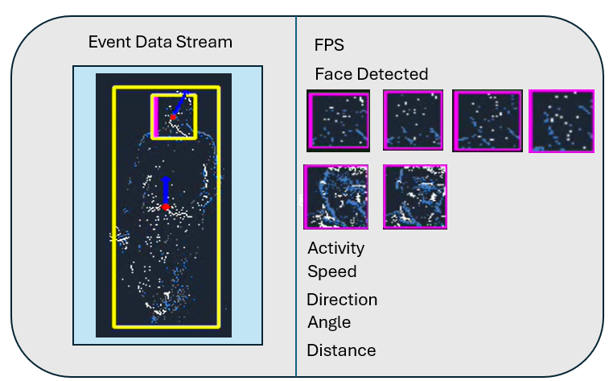
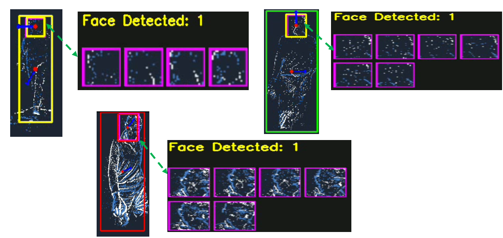
@misc{neuroedgevision2026,
title={NeuroEdge Vision: Real-Time Neuromorphic Perception for Edge AI on Raspberry Pi 5 using Event-Based Cameras},
author={Muhammad Ali Farooq and Gabriel Costache and Peter Corcoran},
year={2026},
institution={University of Galway}
}